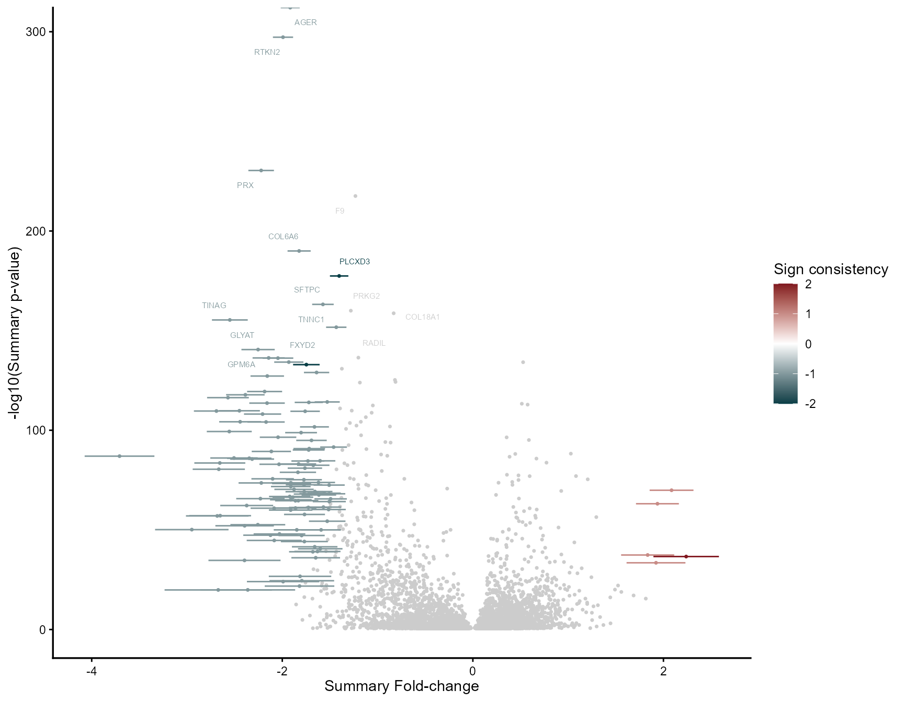
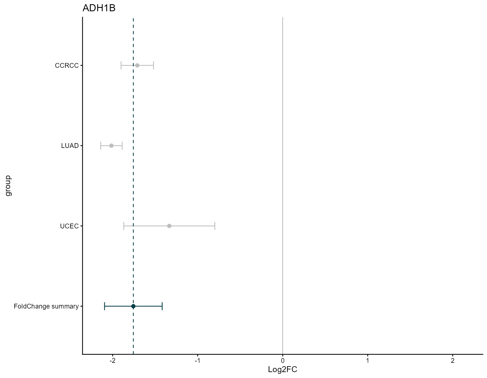
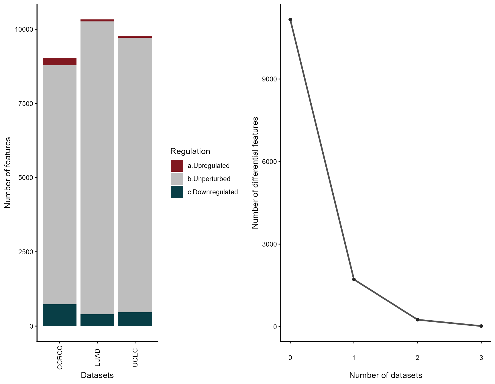
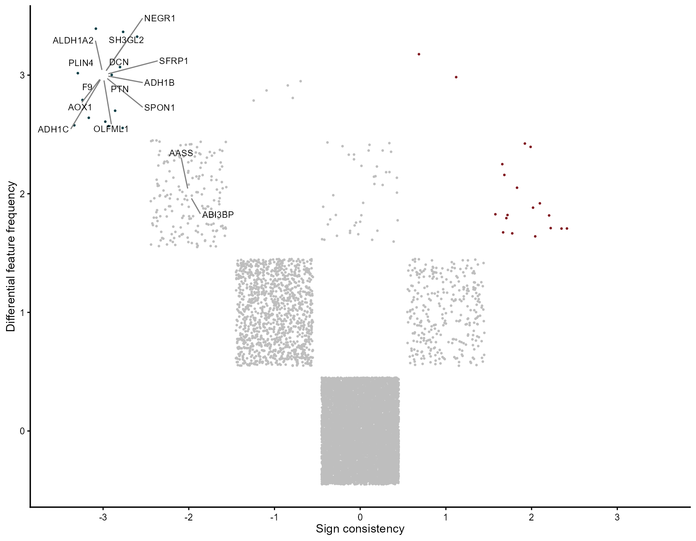
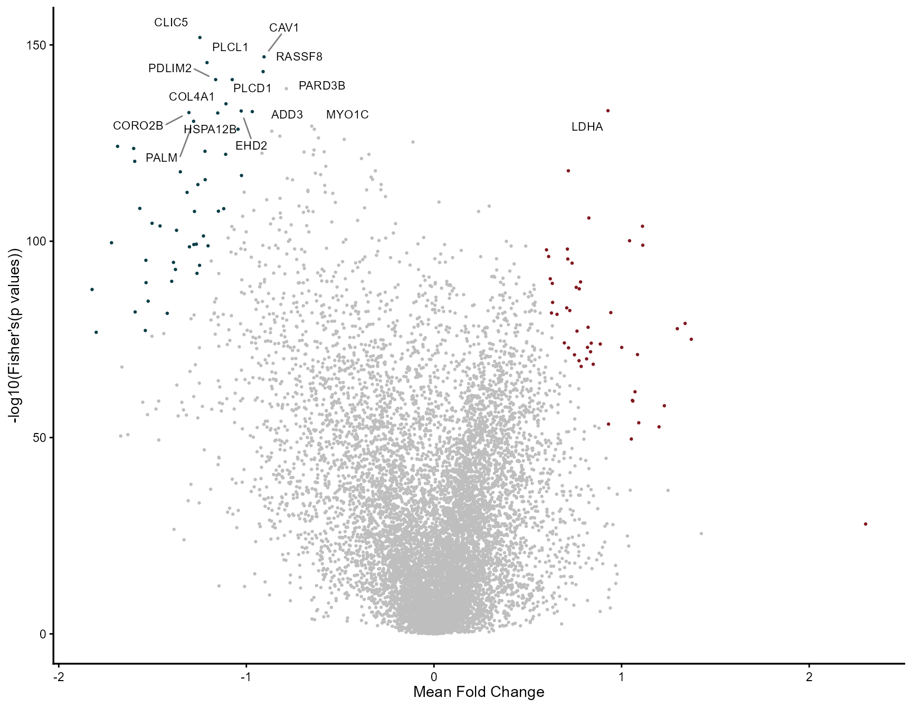

vignettes/Proteomics.Rmd
Proteomics.Rmd📄 See also: Gene and transcript-level meta-analysis (the main MetaVolcanoR vignette)
MetaVolcanoR was first built for gene-expression meta-analysis, but it operates on any table of features described by an identifier, a log fold change, a p-value, and a variance estimate. This makes it directly applicable to differential protein abundance from mass-spectrometry proteomics.
This vignette demonstrates the complete workflow on real, harmonized cancer proteomics from the Clinical Proteomic Tumor Analysis Consortium (CPTAC) [@cptac; @cptacpkg]. We meta-analyze the tumor-versus-normal proteome across three independent cancer cohorts:
| Label | Cancer | Cohort | Tumor / Normal |
|---|---|---|---|
CCRCC |
Clear cell renal cell carcinoma | CPTAC-CCRCC | 110 / 84 |
LUAD |
Lung adenocarcinoma | CPTAC-LUAD | 111 / 102 |
UCEC |
Uterine corpus endometrial carcinoma | CPTAC-UCEC | 103 / 49 |
Each cohort is an independent set of patients, profiled by the same
harmonized TMT pipeline (University of Michigan / umich
source), with tumor and normal-adjacent tissue. This is an ideal
meta-analysis substrate: the same biological contrast (tumor vs normal),
measured across genuinely different tissues and patient populations.
Proteins that move consistently across all three are
pan-cancer tumor markers — the robust signal a
meta-analysis is designed to surface, above and beyond any single cancer
type. All plots below use MetaVolcanoR’s default styling; see the Customizing your
plots section of the main vignette for colors, titles, and labeling
options.
A note on method. CPTAC abundances are log2-ratios to a study-specific reference channel, so raw values are not comparable across cohorts. We therefore compute the tumor-vs-normal contrast within each cohort first (with
limma), which cancels the study-specific reference, and only then meta-analyze the resulting effect sizes. This is exactly the situation the Random Effects Model is built for.
This vignette pulls data from the cptac Python package.
To build it, create the expected environment once:
reticulate::virtualenv_create("cptac311", version = "3.11")
reticulate::virtualenv_install("cptac311", packages = "cptac")Without it, the vignette’s chunks are skipped and the rest of the site still builds.
library(reticulate)
library(limma)
library(MetaVolcanoR)
library(dplyr)
# Point reticulate at the Python env where cptac is installed, e.g.:
use_virtualenv("cptac311", required = TRUE)
cptac <- import("cptac")Each CPTAC cancer is loaded with its own class, and proteomics comes
from the harmonized umich source. Rows are samples, columns
are proteins.
loaders <- list(
CCRCC = cptac$Ccrcc,
LUAD = cptac$Luad,
UCEC = cptac$Ucec
)
get_prot <- function(loader) {
ds <- loader()
as.data.frame(ds$get_proteomics("umich"))
}
proteomes <- lapply(loaders, get_prot)
sapply(proteomes, dim) # samples x proteins per cohort## CCRCC LUAD UCEC
## [1,] 194 213 152
## [2,] 11889 13302 12662In every CPTAC cohort, normal-adjacent samples carry a
.N suffix on the sample ID, while tumor samples do not. We
use that to define the contrast, then run limma (which
returns a moderated t-test with confidence intervals — the
CI.L/CI.R MetaVolcanoR needs for the Random
Effects Model).
de_tumor_vs_normal <- function(prot) {
ids <- rownames(prot)
group <- ifelse(grepl("\\.N$", ids), "Normal", "Tumor")
group <- factor(group, levels = c("Normal", "Tumor"))
# proteins in rows, samples in columns, for limma
expr <- t(as.matrix(prot))
# keep proteins quantified in >= 50% of samples
expr <- expr[rowMeans(!is.na(expr)) >= 0.5, , drop = FALSE]
design <- model.matrix(~ group) # coef 2 = Tumor vs Normal
fit <- eBayes(lmFit(expr, design))
tt <- topTable(fit, coef = 2, number = Inf, sort.by = "none",
confint = TRUE)
data.frame(
Symbol = sub("^\\('([^']+)'.*$", "\\1", rownames(tt)), # extract gene from ('GENE','ENSP..') tuple
Log2FC = tt$logFC,
pvalue = tt$P.Value,
CI.L = tt$CI.L,
CI.R = tt$CI.R,
stringsAsFactors = FALSE
) |>
dplyr::filter(is.finite(Log2FC), is.finite(pvalue), nzchar(Symbol)) |>
dplyr::arrange(pvalue) |>
dplyr::distinct(Symbol, .keep_all = TRUE)
}
diffprot <- lapply(proteomes, de_tumor_vs_normal)
sapply(diffprot, nrow) # proteins tested per cohort## CCRCC LUAD UCEC
## 9027 10328 9783
lapply(diffprot, head, 3)## $CCRCC
## Symbol Log2FC pvalue CI.L CI.R
## 1 NDUFS4 -2.179033 5.044500e-88 -2.298320 -2.059746
## 2 NDUFA10 -1.905485 9.727881e-87 -2.011640 -1.799330
## 3 NDUFV1 -1.843317 1.980982e-84 -1.949314 -1.737320
##
## $LUAD
## Symbol Log2FC pvalue CI.L CI.R
## 1 PALM2AKAP2 -1.369624 8.364613e-103 -1.435883 -1.303365
## 2 HSPA12B -1.787710 1.886414e-100 -1.876709 -1.698711
## 3 CAVIN2 -2.178691 6.537256e-100 -2.287872 -2.069509
##
## $UCEC
## Symbol Log2FC pvalue CI.L CI.R
## 1 CDH13 -2.222255 3.303805e-39 -2.468253 -1.9762569
## 2 LGALS1 -1.495050 5.643638e-35 -1.677441 -1.3126600
## 3 DPYSL2 -1.113071 1.289798e-33 -1.253372 -0.9727692The REM result reports randomP.adjust — the summary
p-value corrected for multiple testing across all meta-analyzed proteins
(Benjamini-Hochberg by default; see ?rem_mv for
fdr_method). Use it, rather than the nominal
randomP, for feature selection and downstream functional
enrichment.
mv_rem <- rem_mv(
diffexp = diffprot,
pcriteria = "pvalue",
foldchangecol = "Log2FC",
genenamecol = "Symbol",
llcol = "CI.L",
rlcol = "CI.R",
metathr = 0.01,
label_top_n = 15,
label_size = 2,
jobname = "CPTAC_REM",
outputfolder = tempdir(),
draw = "HTML"
)## index Symbol Log2FC_1 CI.L_1 CI.R_1 vi_1 Log2FC_2 CI.L_2 CI.R_2
## 1 5924 MT1H -3.707897 -4.073912 -3.341882 0.03487265 NA NA NA
## 2 8810 SLC12A1 -2.691141 -2.927433 -2.454850 0.01453396 NA NA NA
## 3 9815 TINAG -2.550360 -2.738164 -2.362557 0.00918110 NA NA NA
## 4 8954 SLC47A2 -2.949536 -3.334948 -2.564124 0.03866679 NA NA NA
## 5 9057 SMIM24 -2.570128 -2.789112 -2.351144 0.01248283 NA NA NA
## 6 10488 UMOD -2.655500 -2.923041 -2.387958 0.01863249 NA NA NA
## vi_2 Log2FC_3 CI.L_3 CI.R_3 vi_3 signcon ntimes randomSummary randomCi.lb
## 1 NA NA NA NA NA -1 1 -3.707897 -4.073905
## 2 NA NA NA NA NA -1 1 -2.691141 -2.927429
## 3 NA NA NA NA NA -1 1 -2.550360 -2.738160
## 4 NA NA NA NA NA -1 1 -2.949536 -3.334941
## 5 NA NA NA NA NA -1 1 -2.570128 -2.789108
## 6 NA NA NA NA NA -1 1 -2.655500 -2.923036
## randomCi.ub randomP het_QE het_QEp het_QM het_QMp error
## 1 -3.341889 9.838255e-88 0 1 394.2488 9.838255e-88 FALSE
## 2 -2.454854 2.229947e-110 0 1 498.2980 2.229947e-110 FALSE
## 3 -2.362560 4.350318e-156 0 1 708.4486 4.350318e-156 FALSE
## 4 -2.564131 7.367181e-51 0 1 224.9932 7.367181e-51 FALSE
## 5 -2.351148 4.277462e-117 0 1 529.1715 4.277462e-117 FALSE
## 6 -2.387963 2.691073e-84 0 1 378.4615 2.691073e-84 FALSE
## randomP.adjust se rank
## 1 1.569061e-85 0.1867388 1
## 2 6.728412e-108 0.1205547 2
## 3 4.856695e-153 0.0958163 3
## 4 4.051586e-49 0.1966351 4
## 5 1.768651e-114 0.1117245 5
## 6 3.755392e-82 0.1364984 6
mv_rem@MetaVolcano
mv_rem@metaresult |>
dplyr::arrange(rank) |>
dplyr::select(Symbol, randomSummary, randomP, randomP.adjust, signcon, rank) |>
head(20)## Symbol randomSummary randomP randomP.adjust signcon rank
## 1 MT1H -3.707897 9.838255e-88 1.569061e-85 -1 1
## 2 SLC12A1 -2.691141 2.229947e-110 6.728412e-108 -1 2
## 3 TINAG -2.550360 4.350318e-156 4.856695e-153 -1 3
## 4 SLC47A2 -2.949536 7.367181e-51 4.051586e-49 -1 4
## 5 SMIM24 -2.570128 4.277462e-117 1.768651e-114 -1 5
## 6 UMOD -2.655500 2.691073e-84 3.755392e-82 -1 6
## 7 SLC22A8 -2.666394 3.617919e-81 4.642581e-79 -1 7
## 8 HPD -2.556298 4.257657e-100 9.506496e-98 -1 8
## 9 SLC36A2 -2.682673 9.733763e-58 6.281372e-56 -1 9
## 10 HAO2 -2.450001 1.635191e-110 5.070909e-108 -1 10
## 11 PAH -2.506670 8.347040e-87 1.294255e-84 -1 11
## 12 SLC7A9 -2.651792 7.426460e-58 4.820291e-56 -1 12
## 13 SLC22A6 -2.442244 5.604802e-105 1.455163e-102 -1 13
## 14 DAO -2.387453 1.611099e-118 6.917812e-116 -1 14
## 15 PRX -2.221728 4.159530e-231 1.547900e-227 -1 15
## 16 GLYAT -2.253975 3.197482e-141 2.974725e-138 -1 16
## 17 NPHS2 -2.346493 1.118221e-86 1.710112e-84 -1 17
## 18 XPNPEP2 -2.316559 2.884507e-86 4.293685e-84 -1 18
## 19 SLC5A2 -2.373411 6.012485e-63 4.504925e-61 -1 19
## 20 ENPP6 -2.185531 3.695573e-120 1.650295e-117 -1 20The top consensus proteins — consistent across renal, lung, and
endometrial tumors — are the strongest pan-cancer candidates. A
signcon of 3 or -3 means the
protein moved in the same direction in all three cohorts.
top_gene <- mv_rem@metaresult$Symbol[116]
draw_forest(
remres = mv_rem,
gene = top_gene,
genecol = "Symbol",
foldchangecol = "Log2FC",
llcol = "CI.L",
rlcol = "CI.R",
jobname = "CPTAC_forest",
outputfolder = tempdir(),
draw = "HTML"
)
mv_vote <- votecount_mv(
diffexp = diffprot,
pcriteria = "pvalue",
foldchangecol = "Log2FC",
genenamecol = "Symbol",
geneidcol = NULL,
pvalue = 0.05,
foldchange = 1,
metathr = 0.01,
label_top_n = 15,
jobname = "CPTAC_vote",
outputfolder = tempdir(),
draw = "HTML"
)
mv_vote@featurefreq
mv_vote@MetaVolcano
mv_fisher <- combining_mv(
diffexp = diffprot,
pcriteria = "pvalue",
foldchangecol = "Log2FC",
genenamecol = "Symbol",
metafc = "Mean",
metathr = 0.01,
label_top_n = 15,
jobname = "CPTAC_fisher",
outputfolder = tempdir(),
draw = "HTML"
)
mv_fisher@MetaVolcano
enr <- enrichment_mv(
mv_rem,
category = "H", # MSigDB Hallmark
ranking = "weighted_fc",
plot_padj = 0.1,
plot_top_n = 20,
plot_title = "Hallmark enrichment — pan-cancer proteome meta-analysis"
)
enr$plot
head(enr$result)All data are from CPTAC via the open-source cptac Python
package [@cptacpkg]
(pip install cptac), accessed from R through
reticulate. The proteomics tables are downloaded from the
package’s public data repository at run time; no manual downloads are
required. MetaVolcanoR is free and open source under GPL-3.
If your network performs SSL inspection and the download fails with a certificate error, enabling the system certificate store resolves it:
py_install("truststore", pip = TRUE)
py_run_string("import truststore; truststore.inject_into_ssl()")